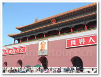

Tourism
Exploring Beijing
Being capital of the People's Republic of China, Beijing is the nation's political, economic, cultural, educational and international trade and communication center. Located in northern China, close to the port city of Tianjin and partially surrounded by Hebei Province, it also serves as the most important transportation hub and port of entry.
As one of the six ancient cities in China, Beijing has been the heart and soul of politics and society throughout its long history and consequently there is an unparalleled wealth of discovery to delight and intrigue travelers as they explore the city's ancient past and exciting modern development. Now it has become one of the most popular tourist destinations in the world, with about 140 million Chinese tourists and 4.4 million international visitors in a year. Know more about Beijing Facts.
From Jan. 1 2013, passport holders of 51 countries and regions including USA, UK, Australia, Canada, France, Germany, Italy, Denmark, Netherlands are granted a visa-free stay of up to 72 hours when taking an international transfer via Beijing Capital Airport. Read details about 72-Hour Visa-Free Transit.
Attractions
There are in fact a great number of tourist attractions and historic sites in Beijing. Some of these interesting places are within walking distance, some are a bit further away. It takes quite some time to savvy everything that Beijing City has to provide. But if you only have a short stay in Beijing, you should make sure to get around the top five places in Beijing City. In this way, you can say that you have been to Beijing City!
The top five must-visit places in Beijing are:
- The Emperial Palace
- Tiananmen Square
- The Great Wall
- Summer Palace
- Beijing Capital Museum
Beijing is an old capital city developing at a fast pace. The Forbidden City is the ideal place for you to begin your exploration of Beijing by opening its mysterious face. With over 9,000 rooms and over 250 acres, this large palace building was built between 1406 and 1420. It burned down and was rebuilt, sacked and renovated for times, so most of the architecture you can see today dates back to the 18th century in the Qing Dynasty. Make sure to wear comfortable shoes as you have to walk a lot! There is a Starbucks in the palace in case you need some coffee to recharge you. I highly recommend you to have a guide. It is quite helpful to have a guide escort you and tell the stories behind the palace. If you are a non-group tourist, I suggest you rent a multi lingual guide recorder either at Meridian Gate (southern gate of Forbidden city) or the Gate of Divine Prowess (Northern gate of Forbidden City) and return it when you finish your tour.
What is the most representative place in Beijing? The answers are various. But Tiananmen Square is unarguably on the top list. Lying in the heart of Beijing City, it is the place for massive parades and gathering. It boasts of the largest square of such kind in the world. This was the place when in 1949, from a rostrum on Tiananmen (the Gate of Heavenly Tiananmen Square Peace), Chairman Mao announced the establishment of the People's Republic of China. Tiananmen Square is circled by Tiananmen (Gate of Heaven Peace) on its north; the Great Hall of the People on its west; on the east of Tiananmen Square lies the National Museum of China,; there are Monument to the People's Heroes and Chairman Mao's Mausoleum on the south. At sunrise and sunset the raising and lowering ceremony of the Chinese National Flag is well worth seeing. The young troops perform very well. Make sure to be there 30 minutes earlier to get a good standing point.
Climbing the Great Wall is a must for you no matter how busy you are! In Beijing there are mainly eight sections of the Great Wall crossing the northern part of Beijing for 600 kms. The eight sections are Badaling, Juyongguan, Huanghuacheng, Jiankou, Mutianyu, Gubeikou, Jinshanling, and Simatai. Most of the sections of the Great Wall in Beijing are well-preserved and mainly the relics dating from the Ming Dynasty, the time for huge construction. For the Great Wall hiking, get ready for strong footwear. For hot weather, please also prepare for sunblock, sunglasses and water. For cold days, get ready for your hat and heavy coat. On the peak of the Badaling, The Great Wall is towering. It goes up to the South peak and north peak from the Guan city, convolves on the ridge of Jundu mountain and Qian mountain. You can not see its beginning and end. It disappears beyond.
Regarded as the largest imperial garden in China, Beijing's Summer Palace is in fact a park-styled royal retreat extending out over 10 square miles in northwest suburban Beijing. Once a summer resort for emperors, this 290-acre partk-palace is still a retreat for visitors, who can take a rest here or wander around old pavilions, buildings, temples, bridges and the huge lake - Kunming Lake. Summer Palace is mainly comprised of Longevity Hill Summer Palace(Washoushan) and Kunming Lake. Much of the park is covered by Kunming Lake. With masterly design and artistic architecture integrating the highlight of Chinese garden arts, the Summer Palace has earned a title of "Royal Garden Museum". It is a royal garden most completely preserved with richest landscapes and large compact buildings. The Summer Palace was listed as the world cultural heritage in 1998.
A trip to Beijing City is not complete without visiting its museums. There are a great number of museums dotting around the city.If you don't have much time available in Beijing, you can focus your museum tour to Beijing Capital Museum. Beijing's new Capital Museum now opens to the public, located on Fuxingmenwai Dajie, the western part of Beijing's Chang'an Jie. The museum is a five-storey mansion, catering for a maximum of 13 concurrent exhibitions, which can be seen in about 5 hours at the cost of 30 yuan per visitor. The architectural design concept of the Capital Museum is based on human and cultural heritage to serve the community and underlines the harmonious integration of past and present, history and modernism, art and nature. The construction of the Capital Museum itself is a piece of architectural artwork integrating both classical and modern beauty. It is of distinct national characteristics on one hand and obvious modern feeling on other.